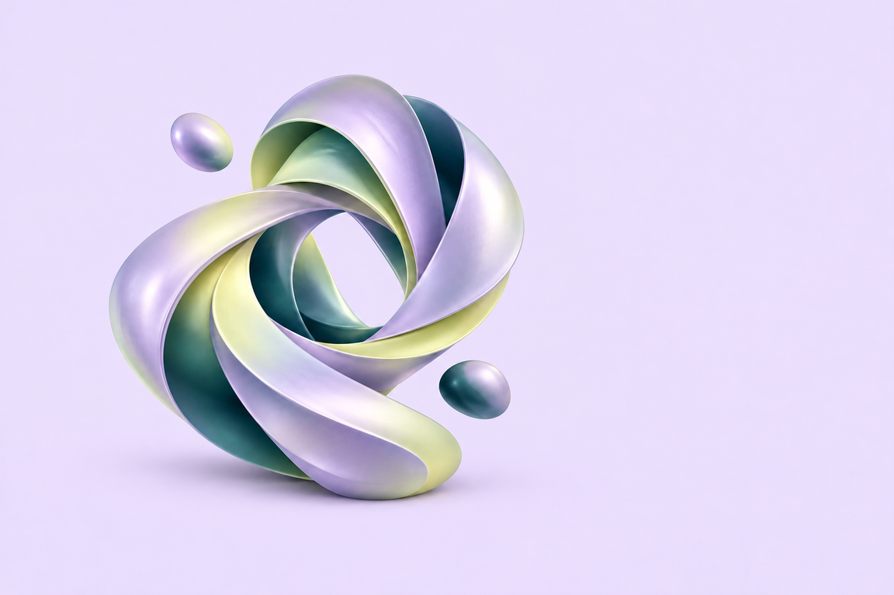
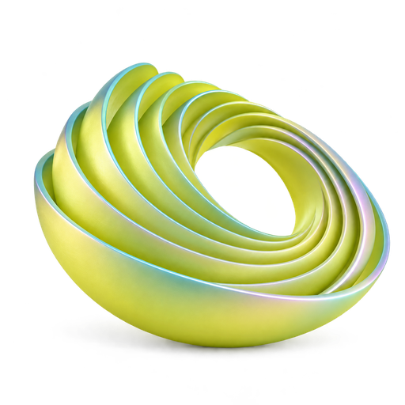
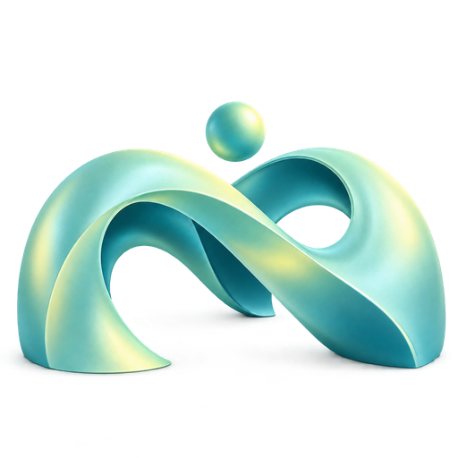

Yandex AI Studio · самостоятельная практика
Тренажёр
компетенций ИИ
180 авторских заданий · 3 уровня · 6 доменов
Локальное веб-приложениеMIT
Практика перед экзаменом «Основы работы с ИИ»
2026
Зачем он нужен
Подготовка, которую можно
запустить сразу
Приложение собирает учебную практику в одном локальном интерфейсе. Оно помогает пройти вопросы, увидеть разбор и вернуться к ошибкам без аккаунта и сервера.
ЛОКАЛЬНЫЙ КОНТУР
Открыть → ответить → разобрать
Статический сайт запускается без аккаунта и сервера. Попытки остаются в браузере ученика.
01Запустить уровень
Выбрать базовый, продвинутый или экспертный маршрут из готового банка.
02Отправить ответ
Проверить вопрос и сразу получить балл, объяснение и разбор вариантов.
03Вернуться к ошибкам
Открыть историю попыток и повторить то, что ещё не стало навыком.
Граница проекта: авторский учебный банк помогает тренироваться, но не копирует официальный экзамен и не обещает проходной балл.
Учебная лестница
Три уровня по 60 вопросов
Каждый уровень покрывает все шесть доменов. Меняется сложность ситуации, а не объём банка.

Базовый
Разобраться в понятиях
Основы ИИ, промптов и инструментов на простых рабочих ситуациях.

Продвинутый
Решать рабочие задачи
Выбор подхода, диагностика ошибок и сборка решений.
Экспертный
Учитывать всю картину
Несколько условий: качество, доступы, стоимость и последствия.
10 вопросов × 6 доменов = 60 вопросов на уровень
Покрытие программы
Шесть доменов. Равный банк, официальный вес
Внутри тренажёра каждый домен даёт 30 заданий: по 10 на каждом уровне. Проценты ниже относятся к программе экзамена.
| Домен | Доля программы | На уровень | Всего |
|---|
| Основы ИИ и генеративного ИИ | ~14% | 10 | 30 |
| Практическое применение в работе | ~18% | 10 | 30 |
| Ответственный ИИ | ~12% | 10 | 30 |
| Внедрение и ценность для бизнеса | ~16% | 10 | 30 |
| ИИ-агенты и инструменты агентской платформы | ~12% | 10 | 30 |
| Алиса AI Про для бизнеса | ~28% | 10 | 30 |
Учебная честность: равное число заданий помогает сравнивать уровни, а официальный вес остаётся видимым контекстом.
Один вопрос
Ответ превращается в следующий шаг
Интерфейс фиксирует ответ, показывает разбор и позволяет вернуться к ошибкам через отдельный режим.
01
Выбрать
Один ответ, несколько вариантов или пары
02
Проверить
Отправить и получить 1 или 0
03
Понять
Прочитать объяснение и памятку
04
Повторить
Открыть режим «Ошибки»
Разбор входит в учебный результат: вопрос хранит объяснения вариантов и источник.
Как читать результат
47 из 60: результат 78,3%
Для тренировки приложение держит ориентир 80%. Это учебная цель, а не официальный проходной балл экзамена.
78,3%
47 правильных ответов
из 60 вопросов
Что ещё видно
• сколько вопросов отвечено
• где ошибки по шести доменам
• какие объяснения стоит повторить
Счёт пересчитывается из ответов. Импортированный JSON не может подменить результат отдельным полем.
Данные ученика
Прогресс живёт рядом с приложением
Тренажёр хранит попытки в localStorage, а резервную копию можно скачать и импортировать в совместимом браузере.
Локально
Попытки, черновики, закладки и история сохраняются в браузере.
Переносимо
JSON-резервная копия переносит историю между устройствами.
Граница
Другой банк вопросов делает старые сохранения несовместимыми.
Если браузер запрещает storage, сессия остаётся только в открытой вкладке.
Для автора и контрибьютора
Статический стек, короткий путь до запуска
Preact + htm + Vite собирают браузерное приложение из JavaScript, CSS, JSON-банка и локальных ресурсов.
src/data
180 вопросов
и метаданные
src/core
экзамен · счёт
· хранение
src/components
экраны и
взаимодействия
Vite → dist
статическая
публикация
npm ci
npm run devлокальный запуск
npm run checkлинты · банк · тесты · build
Сообщайте об ошибках и предлагайте изменения через GitHub Issues. Порядок участия описан в CONTRIBUTING.md.